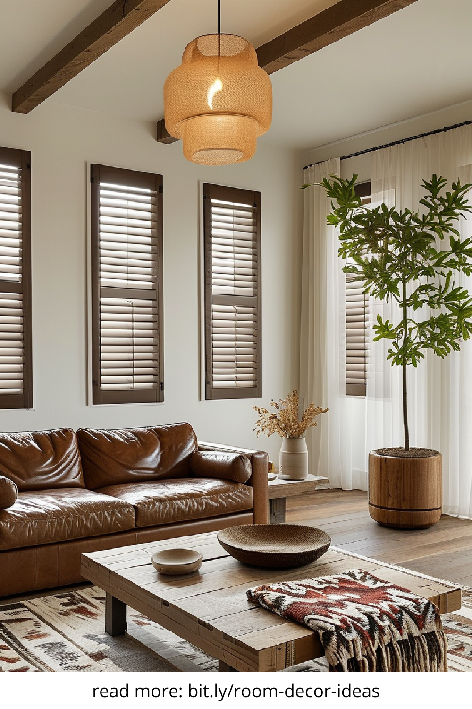
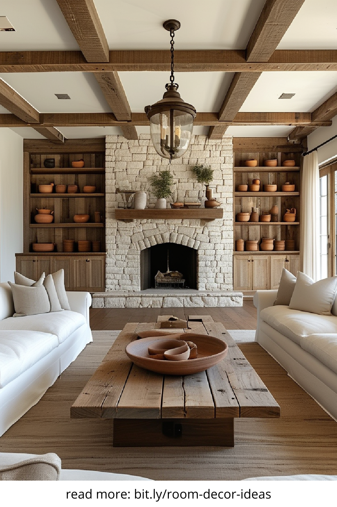
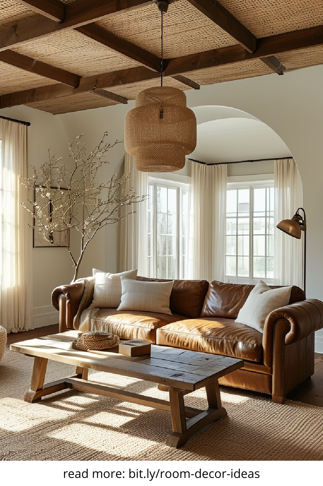
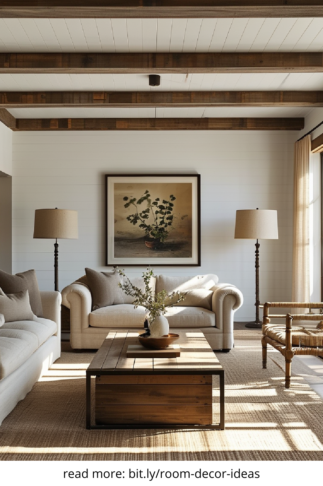

Warm and minimalist home decor is an interior design style that blends simplicity with warmth, creating a cozy yet uncluttered space. Unlike cold minimalism, this approach incorporates soft textures, earthy tones, and thoughtful details to make a home feel inviting without overwhelming the senses. It is perfect for those who appreciate clean lines but still want a home that radiates comfort and personality.
The warm and minimalist aesthetic follows a few fundamental principles that make it stand out. Here are the essential elements:
The foundation of warm minimalism is a neutral color palette, including shades of beige, cream, warm white, and taupe. Earthy hues such as terracotta, muted greens, and soft browns also help in creating a balanced and inviting atmosphere. These tones promote relaxation and seamlessly blend with natural materials.
Incorporating wood, stone, linen, and wool enhances the warmth of a minimalist space. Opt for light or medium-toned wood furniture, woven textiles, and organic ceramics to add depth and character without making the space feel cluttered. Natural materials bring a sense of authenticity and timeless beauty.
Minimalist furniture should be sleek and functional, with a focus on quality over quantity. Choose pieces with clean lines, subtle curves, and a cozy feel. Avoid excess ornamentation and prioritize comfort by investing in plush seating, soft rugs, and ergonomic designs.
Lighting plays a crucial role in warm minimalist decor. A combination of natural light, ambient lighting, and task lighting helps create a cozy and well-lit space. Soft, diffused lighting from pendant lamps, floor lamps, and candles enhances the warmth and intimacy of a room.
Rather than filling a space with decorative items, warm minimalism embraces intentionality. Choose meaningful decor pieces such as handcrafted ceramics, textured throw pillows, and a few well-placed plants to create a lived-in feel. Every item should have a purpose, whether functional or aesthetic.
Transforming your home into a warm minimalist haven requires a balance between simplicity and coziness. Here’s how to achieve it:
A warm minimalist home is free of excess clutter but still feels personal. Instead of removing all decor, select a few pieces that reflect your personality. Keep only essential furniture and decor that contribute to a cohesive and harmonious look.
Prioritize quality craftsmanship and timeless designs over fast furniture trends. Well-made pieces crafted from durable materials last longer and add an understated elegance to your home. Consider handmade furniture and artisanal decor for a unique touch.
A warm minimalist home thrives on the contrast between soft and hard materials. Pair sleek surfaces like glass and metal with cozy elements like wool throws and linen cushions. This contrast prevents the space from feeling too stark and adds depth to the decor.
Soft textiles, layered lighting, and scented candles all contribute to a welcoming ambiance. Opt for plush rugs, knitted blankets, and upholstered furniture to introduce warmth. Adding greenery, such as potted plants or dried floral arrangements, enhances the organic feel of the space.
Warm and minimalist home decor has gained popularity because it strikes the perfect balance between simplicity and comfort. Unlike ultra-modern minimalism, which can feel sterile, warm minimalism allows for personal expression while maintaining a clean and airy environment. It promotes mindfulness by encouraging intentionality in design choices, making homes feel both stylish and serene.
Embracing warm and minimalist home decor is about creating a space that feels both functional and inviting. By focusing on natural materials, a neutral palette, and thoughtfully chosen decor, you can design a home that is timeless, calming, and effortlessly elegant. Whether you’re redesigning a single room or your entire home, this aesthetic offers a harmonious blend of simplicity and warmth that will stand the test of time.
   